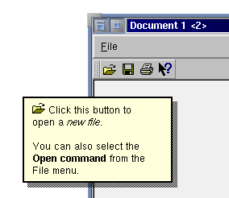

QWhatsThis¶
Synopsis¶
Static functions¶
- def
createAction([parent=nullptr]) - def
enterWhatsThisMode() - def
hideText() - def
inWhatsThisMode() - def
leaveWhatsThisMode() - def
showText(pos, text[, w=nullptr])
Detailed Description¶
The
PySide2.QtWidgets.QWhatsThisclass provides a simple description of any widget, i.e. answering the question “What’s This?”.“What’s This?” help is part of an application’s online help system, and provides users with information about the functionality and usage of a particular widget. “What’s This?” help texts are typically longer and more detailed than
tooltips, but generally provide less information than that supplied by separate help windows.
PySide2.QtWidgets.QWhatsThisprovides a single window with an explanatory text that pops up when the user asks “What’s This?”. The default way for users to ask the question is to move the focus to the relevant widget and press Shift+F1. The help text appears immediately; it goes away as soon as the user does something else. (Note that if there is a shortcut for Shift+F1, this mechanism will not work.) Some dialogs provide a “?” button that users can click to enter “What’s This?” mode; they then click the relevant widget to pop up the “What’s This?” window. It is also possible to provide a a menu option or toolbar button to switch into “What’s This?” mode.To add “What’s This?” text to a widget or an action, you simply call
QWidget.setWhatsThis()orQAction.setWhatsThis().The text can be either rich text or plain text. If you specify a rich text formatted string, it will be rendered using the default stylesheet, making it possible to embed images in the displayed text. To be as fast as possible, the default stylesheet uses a simple method to determine whether the text can be rendered as plain text. See
Qt.mightBeRichText()for details.Act = QAction(tr("&New"), self) Act.setShortcut(tr("Ctrl+N")) Act.setStatusTip(QObject.tr("Create a new file")) Act.setWhatsThis(QObject.tr("Click self option to create a new file."))An alternative way to enter “What’s This?” mode is to call
PySide2.QtWidgets.QWhatsThis.createAction(), and add the returnedPySide2.QtWidgets.QActionto either a menu or a tool bar. By invoking this context help action (in the picture below, the button with the arrow and question mark icon) the user switches into “What’s This?” mode. If they now click on a widget the appropriate help text is shown. The mode is left when help is given or when the user presses Esc.You can enter “What’s This?” mode programmatically with
PySide2.QtWidgets.QWhatsThis.enterWhatsThisMode(), check the mode withPySide2.QtWidgets.QWhatsThis.inWhatsThisMode(), and return to normal mode withPySide2.QtWidgets.QWhatsThis.leaveWhatsThisMode().If you want to control the “What’s This?” behavior of a widget manually see
Qt.WA_CustomWhatsThis.It is also possible to show different help texts for different regions of a widget, by using a
PySide2.QtGui.QHelpEventof typeQEvent.WhatsThis. Intercept the help event in your widget’sQWidget.event()function and callQWhatsThis.showText()with the text you want to display for the position specified inQHelpEvent.pos(). If the text is rich text and the user clicks on a link, the widget also receives aPySide2.QtGui.QWhatsThisClickedEventwith the link’s reference asQWhatsThisClickedEvent.href(). If aPySide2.QtGui.QWhatsThisClickedEventis handled (i.e.QWidget.event()returns true), the help window remains visible. CallQWhatsThis.hideText()to hide it explicitly.See also
PySide2.QtWidgets.QToolTip
-
static
PySide2.QtWidgets.QWhatsThis.createAction([parent=nullptr])¶ Parameters: parent – PySide2.QtCore.QObjectReturn type: PySide2.QtWidgets.QActionReturns a ready-made
PySide2.QtWidgets.QAction, used to invoke “What’s This?” context help, with the givenparent.The returned
PySide2.QtWidgets.QActionprovides a convenient way to let users enter “What’s This?” mode.
-
static
PySide2.QtWidgets.QWhatsThis.enterWhatsThisMode()¶ This function switches the user interface into “What’s This?” mode. The user interface can be switched back into normal mode by the user (e.g. by them clicking or pressing Esc), or programmatically by calling
PySide2.QtWidgets.QWhatsThis.leaveWhatsThisMode().When entering “What’s This?” mode, a
PySide2.QtCore.QEventof type Qt::EnterWhatsThisMode is sent to all toplevel widgets.
-
static
PySide2.QtWidgets.QWhatsThis.hideText()¶ If a “What’s This?” window is showing, this destroys it.
-
static
PySide2.QtWidgets.QWhatsThis.inWhatsThisMode()¶ Return type: PySide2.QtCore.boolReturns
trueif the user interface is in “What’s This?” mode; otherwise returnsfalse.
-
static
PySide2.QtWidgets.QWhatsThis.leaveWhatsThisMode()¶ If the user interface is in “What’s This?” mode, this function switches back to normal mode; otherwise it does nothing.
When leaving “What’s This?” mode, a
PySide2.QtCore.QEventof type Qt::LeaveWhatsThisMode is sent to all toplevel widgets.
-
static
PySide2.QtWidgets.QWhatsThis.showText(pos, text[, w=nullptr])¶ Parameters: - pos –
PySide2.QtCore.QPoint - text – unicode
- w –
PySide2.QtWidgets.QWidget
Shows
textas a “What’s This?” window, at global positionpos. The optional widget argument,w, is used to determine the appropriate screen on multi-head systems.- pos –
© 2018 The Qt Company Ltd. Documentation contributions included herein are the copyrights of their respective owners. The documentation provided herein is licensed under the terms of the GNU Free Documentation License version 1.3 as published by the Free Software Foundation. Qt and respective logos are trademarks of The Qt Company Ltd. in Finland and/or other countries worldwide. All other trademarks are property of their respective owners.